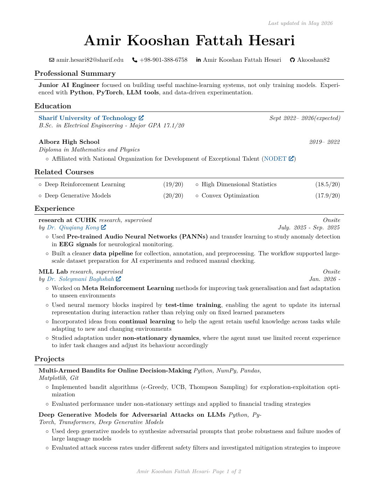
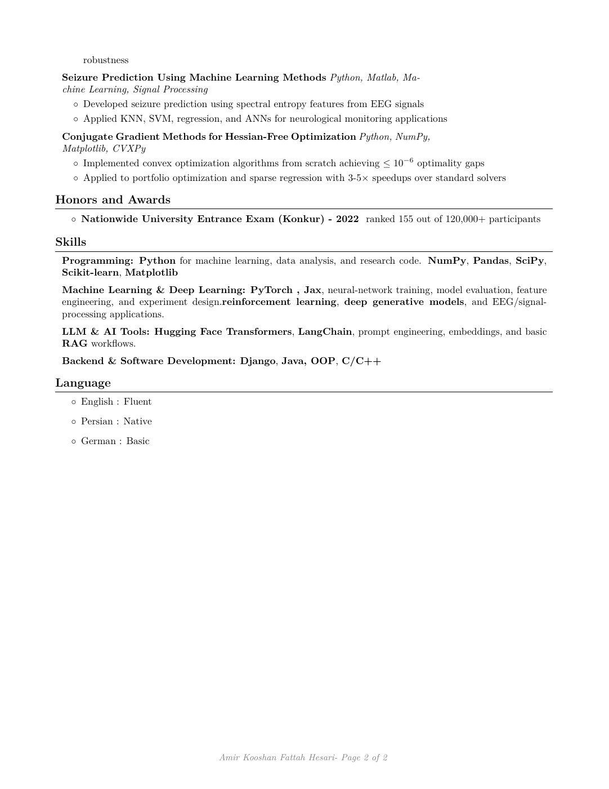

Background & experience
Curriculum vitae
Education, research, projects, and technical experience.
Amir Kooshan Fattah Hesari
Electrical Engineering · Sharif University of Technology


Background & experience
Education, research, projects, and technical experience.
Electrical Engineering · Sharif University of Technology

